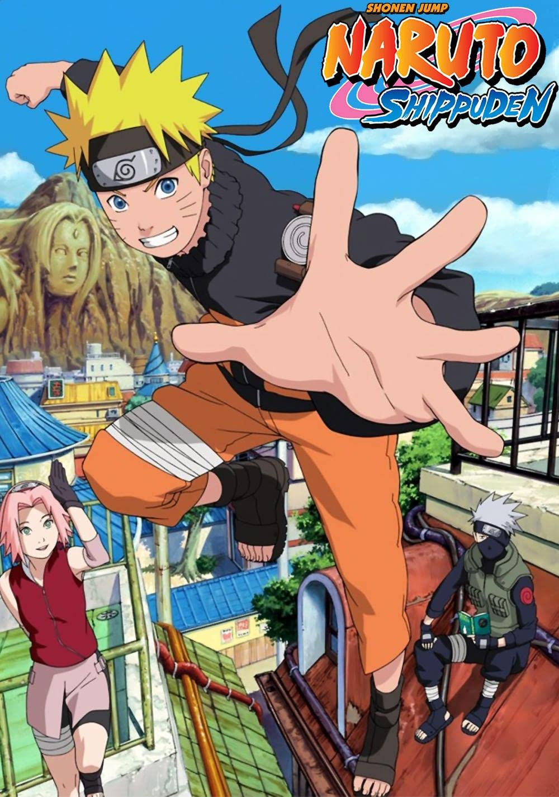

Naruto
 Naruto is a Very popular anime mabey one of the most populor out of The Big Three. The Main Charcter of this show is Naruto and he a boy that grew up in a ninja village. altho he wasnt that good jutsus ( a mystical art the ninjas will utilize ) or class he learned a jutsu that will help him through out his intire journy. he was outcasted as a child because he didnt have any parents and he had the Nine Tailed Beast living inside him. His dream is to become the Hokage ( The Strong VIllage Leader )